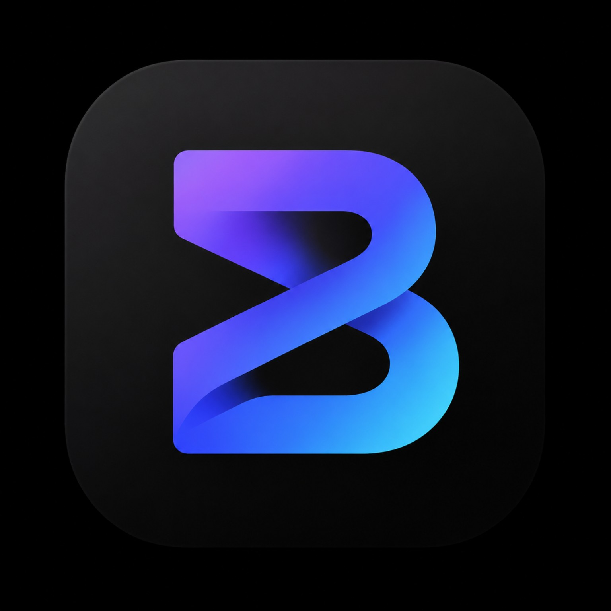

← Kembali ke StudioDraf informasi teknis — identitas perusahaan pengelola, masa simpan data, persetujuan pengguna, dan kebijakan hukum harus diselesaikan operator sebelum layanan komersial dibuka.
Foto kamera, preview Live Photo dan filter lokal diproses oleh browser di perangkat. File tidak dikirim ke BLINK API hanya karena kamera dibuka.
Ketika pengguna sudah masuk dan Auto AI aktif, foto dan video yang diambil/diunggah dikirim ke backend terautentikasi untuk pemrosesan. Akun, job dan saldo token disimpan di database. File input dan hasil ditempatkan pada penyimpanan media privat, dengan kebijakan retensi yang masih harus ditetapkan pengelola.
Order, identitas akun dan bukti pembayaran dikirim ke backend untuk review admin. Bukti pembayaran tidak membuktikan penerimaan dana hingga admin memverifikasinya pada rekening merchant.
Gunakan HTTPS, jangan mengunggah data pribadi milik orang lain tanpa izin. Pengguna harus meninjau hasil AI karena perubahan detail dapat tidak akurat. Browser mungkin memiliki pengaturan privasi tersendiri.
Pertanyaan, keluhan dan laporan bug: Telegram @Marvel_sh.